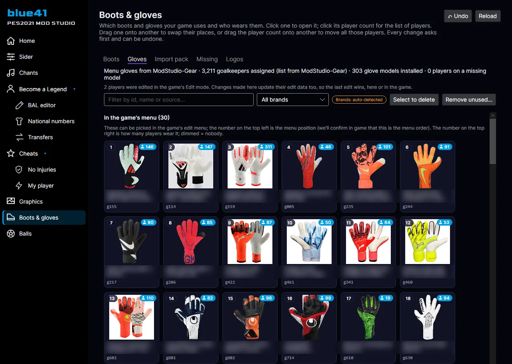
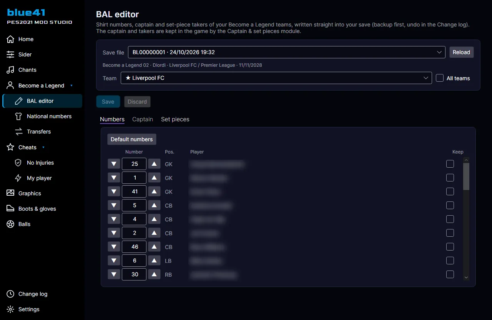
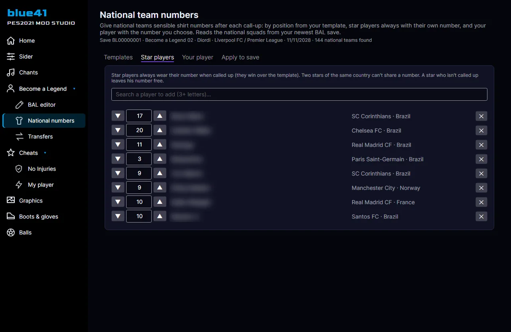
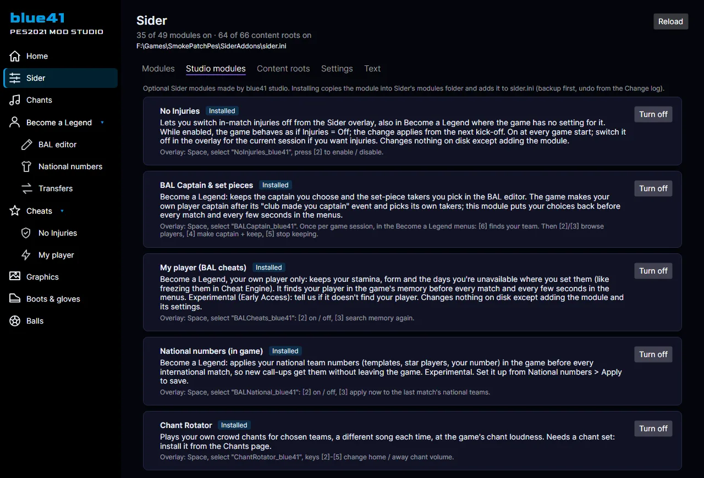

PES 2021 modding,
without the headaches.
One portable Windows app for the everyday modding jobs: kits, boots, gloves and balls, Sider settings and modules, your own crowd chants, Become a Legend editing — and moving your mods from Football Life 2026 to 2027. With a backup and an undo for every change it makes.
Free · Windows 10/11 · no installer · PES 2021 + Sider, SP Football Life 2026 and 2027 · English, Español, Português

See it in action











Kits: give any team its own kits, numbers, letters and colours
What it does today
Kit manager & editor
Give any team without kits a full set in a minute: the blue41 template (home, away and two goalkeeper kits) or a copy of another team. Draw numbers and name letters in any font, set the kit colours (detect them or pick them from the picture), and place the name and numbers (height, size, curve; name, chest and shorts numbers on or off). Reorder, copy, take out of the game, export / replace any texture.
Boots & gloves manager
Every boot and glove your game uses, with its menu picture, menu place and how many players wear it. Rename, swap, give to players, drag and drop to reorder, filter by brand, fill in names and pictures from your packs, and fix players on a missing model.
Import packs in one go
Zip, 7z, rar or a folder: see what's new, what would replace yours and what you already have. New models take over the menu place and the players of the ones they replace — also in your Edit-mode data — with a progress bar, and the replaced ones go to the Recycle Bin.
Menu picture generator
A clean menu picture for any boot or glove in seconds: your own logos, 13 free fonts and colours taken from the texture.
Ball manager
Drag balls onto competitions: random sets, finals, winter and hi-vis balls, winter weeks. Rename balls everywhere, make menu pictures, export / import textures and import ball packs with a review. Works with BallServer and Football Life 2027's own ball server.
FL27, next to FL26
Switch between PES 2021, FL26 and FL27 on Home; each game keeps its own folders. Move from another game brings your FL26 mods over (face packs, commentary, boots packs; kits, balls and stadiums into FL27's own modules), and Move a career continues your Become a Legend career in FL27 (experimental).
Become a Legend editor
Shirt numbers of your career's teams with clash checks and your patch's default numbers; a captain and set-piece takers the game keeps (Sider module). My player shows every value of your own player as the career save keeps it.
Full team control
Become a Legend, your way: control the whole team, choose Cursor Change in the pause menu and edit the Game Plan in matches (formation, tactics, substitutions). The spectator prompt at kick-off is removed by itself.
National team numbers
Templates per position, star players with their own number and your own number: applied to your save, or in game before every international match.
Transfers & cheats
Move a player to another club in your Become a Legend save. No Injuries (also in BAL, where the game has no setting) and Fitness & form lock: keeps your stamina, form and days out where you set them.
Sider, made easy
Every sider.ini setting explained in plain English with the right control for each value; modules and content roots on/off and in order without editing text. The studio's own modules install in one click, and Home tells you when they need an update.
Custom crowd chants
Drop MP3 or WAV files on a team: they are converted, matched to the game's own chant loudness and a different song plays each time. Long songs play in full (the module borrows bigger tracks of teams that aren't playing) and get a shortened version for smaller tracks. Trim noise at the start or end on a timeline, or speed a song up a little with the same pitch. Ready-made sets for Liverpool, Corinthians and Brazil — no 2 GB sound bank copies.
Safe & portable
Every write is backed up, verified and listed in the Change log, where one click undoes it; deleted files go to the Recycle Bin. No installer, no registry: it finds your games, Sider and saves on its own, and tells you what each page needs, with download links.
On the way
In development
- Graphics manager — logos, adboards and textures: replace, relocate, organise
- Kit editor, next steps — a live preview of where the name and numbers sit on the shirt, accented letters, recolouring a kit's zones
- More to move between games — scoreboards, referee kits, menus and boots / gloves lists converted from FL26 to FL27
Planned
- Competition logos and adboards organiser
- See which mod wins for every kind of file (boots and gloves packs are checked already)
- Launch helpers (e.g. automatic Cheat Engine table setup)
- More languages (translators welcome)
Guides
Step-by-step answers for the most common PES 2021 modding jobs.
Questions
Does it work with SP Football Life and other PES 2021 patches?
Yes. It works with eFootball PES 2021 and Sider 7, and it was built and tested on SP Football Life 2026 and 2027 (switch between them on Home). Patches that use Sider work the same way.
Can I move my Football Life 2026 mods and career to FL27?
Yes. Pick FL27 on Home, then open Move from another game: tick what to bring over (face packs, commentary, boots packs, stadiums, kits, balls…). Nothing is overwritten and every copy can be undone. Become a Legend → Move a career (experimental) continues your FL26 career in FL27.
Is it safe for my game and my Become a Legend saves?
Every change is backed up first, checked after writing and listed in the Change log, where one click undoes it. The app never patches the game's CPK files, and deleted files go to the Recycle Bin.
How do I install a boots or gloves pack in PES 2021?
Open Boots & gloves → Import pack and choose the zip, 7z, rar or folder. Review what's new and what it replaces, then press Install: the new models take the menu places and players of the ones they replace.
How do I give a team without kits its own kits?
Open Kits → Add a team, search the team and keep the blue41 template (or copy another team's kits), then Add team. In Team kits, Numbers & letters draws the numbers and name in any font, and Colours & settings sets the colours and where the name and numbers sit.
How do I add custom crowd chants to PES 2021?
Open Chants, add a team that has chant tracks in the game and drop your MP3 or WAV files on it. The app converts them, matches them to the game's chant loudness, and the game plays a different song each time. Long songs play in full, and Trim… cuts noise or speeds a song up a little.
How do I turn off injuries in Become a Legend?
Install the No Injuries module from the app. It is on at every game start and can be switched in the Sider overlay.
Is it free? What do I need?
Yes, it is free and has no ads. You need Windows 10 or 11 (64-bit) and PES 2021 with Sider 7, or SP Football Life 2026 / 2027 (Sider included).
Support the project
The studio is free and made by one independent developer. If it saves you time, a coffee or a monthly tip helps keep new features coming.